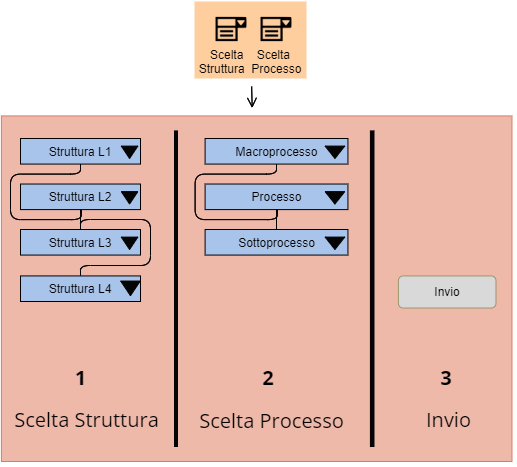
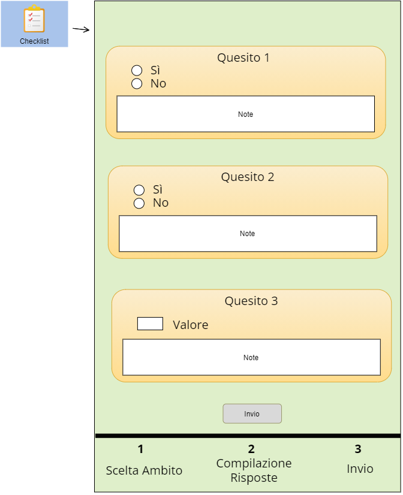
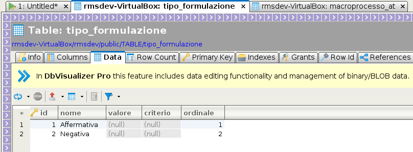

Dopo aver caricato le strutture di organigramma ed effettuato la mappatura dei processi, si passa all’intervista (o audit), costituita da una serie di quesiti rivolti alle strutture che erogano i processi; le risposte ai quesiti, volte a investigare il modo in cui i processi stessi vengono salvaguardati e monitorati rispetto al rischio corruttivo, vengono “macinate” da specifici algoritmi di calcolo del rischio, producendo i valori di rischio ottenuti dal processo su specifici indicatori.
Per effettuare un audit, si identifica anzitutto la struttura intervistata e il processo di cui si vuole quantificare l’esposizione al rischio, tramite un apposito wizard (v. Figura 2).
Il gestore dell’intervista, che raccoglie le informazioni, identifica la struttura che sta intervistando e il processo o il sottoprocesso esaminato (non è sufficiente identificare il macroprocesso ma è necessario scegliere almeno un processo). Quindi clicca su Invio.

Questa azione produce la generazione dei quesiti, raggruppati in ambiti di analisi (v. Figura 3).
A questo punto, l’intervistatore deve rivolgere almeno una parte di questi quesiti al responsabile di struttura intervistato, e riportare le risposte fornite.
Per ogni quesito, inoltre, è compilabile facoltativamente un campo note.
Ogni volta che si procede ad effettuare un’intervista con una struttura, l’applicazione mostra al gestore tutti i quesiti, non soltanto un sottoinsieme. Potrebbe, infatti, verificarsi che, nel corso dell’intervista, alcune riposte o commenti dell’intervistato, riportati poi nelle note dal gestore, attivino l’attenzione del gestore su aspetti che in precedenza non aveva pensato di investigare, ma che si rende conto che è opportuno invece approfondire. Pertanto, i quesiti mostrati sono ad ogni intervista l’elenco completo, ma tuttavia non è obbligatorio rispondere a tutti.
Dal punto di vista dello schema logico, l’entità quesito è collegata a tre enumerativi dinamici:
il primo è l’ambito di analisi (l’argomento, ovvero una semplice “tag” del quesito, in base al quale i quesiti stessi possono essere raggruppati nella pagina in riquadri, colori, etc.);
il secondo è il tipo di quesito.

Possono esistere, infatti, svariati tipi di quesiti.
Il primo tipo è rappresentato da quesiti di tipo “On/Off”, ovvero “Si/No”, vale a dire quesiti misurabili su scala nominale: la tipologia delle risposte a questi quesiti sarà quindi di tipo qualitativo.
Ad esempio: “Si sono verificati fino ad oggi[^1] episodi di Whistleblowing?”
A questa domanda si può rispondere o “si” oppure “no”, quindi le risposte stesse non sono espresse in termini di “quantità” ma solo di “qualità”.
Un altro tipo di quesiti è rappresentato da quesiti di tipo quantitativo.
P.es., se si chiedesse “Quanti episodi di Whistleblowing si sono verificati fino ad oggi?” la risposta sarebbe costituita da un numero appartenente ad N (l’insieme dei numeri naturali); quindi questa risposta è misurabile su una scala a rapporti.
Un ulteriore tipo di quesito è rappresentato da domande che necessitano di una risposta descrittiva.

La formulazione del quesito esprime il “verso” dell’identificazione di un dato rischio da parte di un dato quesito.
Questo dato è necessario perché una stessa risposta può identificare un rischio alto o un rischio basso a seconda di come è formulata la domanda.
Ad esempio: il quesito:
“Si sono verificati in passato provvedimenti disciplinari legati a comportamenti che hanno esposto al rischio corruttivo?”
è un quesito di tipo “Vero/Falso” (quindi si risponde o sì o no). Se si risponde sì, il quesito è fortemente identificante un rischio corruttivo, perché è evidente che se in passato ci sono stati episodi del genere, c’è da aspettarsi che se ne possano verificare ulteriori. Quindi la “quota parte” di identificazione di un dato rischio sarà alta (p.es. 80%). Ma per capire se è la risposta “sì” o la risposta “no” quella che fa scattare il rischio, bisogna guardare come è formulato il quesito; p.es. questo quesito è formulato in modo affermativo, cioè la formulazione che identifica il rischio è la risposta sì (p.es. “id_formulazione_identificante” = 1).
Invece, al quesito:
“Il processo è sottoposto al vaglio di due distinti soggetti verificatori?”
sarà la risposta “no” a far scattare il rischio, cioè la risposta negativa, perché la risposta che fa scattare l’allarme è la risposta “no”, non la risposta “si”.
Quindi la formulazione del quesito è indicativa di quale è la risposta (o l’ammontare, nel caso di quesiti con risposta numerica) collegata al rischio.
L’identificazione del rischio dalla risposta in funzione del modo in cui è formulata la domanda vale infatti anche per quesiti di tipo quantitativo.
Ad esempio, se il quesito fosse:
“Quanti soggetti verificatori controllano il processo dal punto di vista del rischio corruttivo?”
la risposta che fa scattare l’allarme sarebbe 0 mentre 1 potrebbe far scattare un rischio moderato, mentre 2 potrebbe correlare la risposta a un rischio basso.
Una volta compilati tutti i quesiti, o comunque quelli che il gestore ritiene opportuno rivolgere, il gestore avvia il workflow di calcolo in tempo reale del rischio, scatenando gli algoritmi di calcolo dei valori degli indicatori di rischio.